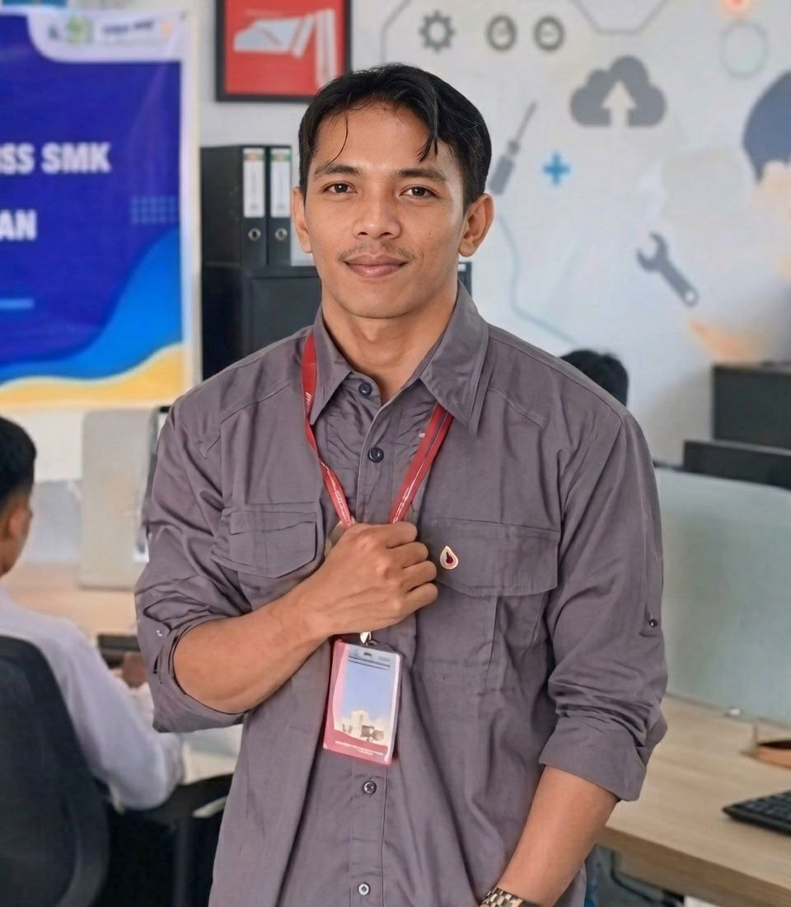

Mobile Developer Specialist
Seorang Mobile Developer yang berdedikasi dengan latar belakang pendidikan S1 Teknik Informatika. Spesialis dalam membangun aplikasi Android yang efisien dan user-friendly menggunakan teknologi terbaru.
Desa Cerdas
6 Pilar Desa Cerdas
Desa Cerdas adalah konsep pengembangan desa yang menggunakan teknologi informasi dan
komunikasi (TIK) untuk meningkatkan kualitas hidup masyarakat desa secara holistik,
termasuk di bidang pemerintahan, kesehatan, pendidikan, dan perekonomian, dengan
memanfaatkan potensi sumber daya manusia dan alam yang ada di desa.
Projek Mandiri
Merancang, mengembangkan, dan mempublikasikan berbagai aplikasi Android kustom sesuai kebutuhan klien. Berfokus pada optimasi performa dan desain antarmuka (UI) yang intuitif.
Pengajar Privat
Memberikan bimbingan teknis mengenai fundamental pengembangan aplikasi Android, mulai dari penyusunan logika pemrograman hingga implementasi UI/UX.
Google Developer Groups (GDG)
Menjadi mentor kelompok belajar untuk membantu pengembang lokal menguasai pemrograman Android melalui kurikulum resmi Google.
STT Adisutjipto Yogyakarta
SMK Telkom Purwokerto